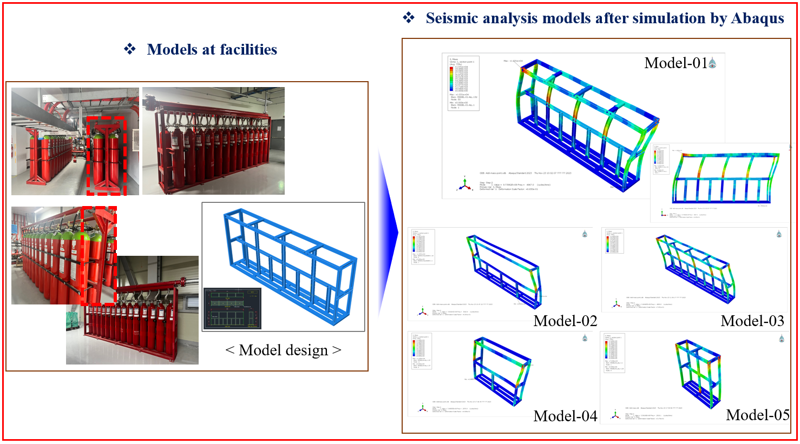

Machine Leanring updating...
Machine Learning-Based Prediction Model for Soil Corrosion Rate Through Big Data Collection
Data Analysis and Processing Techniques:
Machine Learning model:
Learning curve results
Simulation
Lift Simulation for Ro-Ro Sewol Ferry Wreck Load out of Water Recovery
Curve Analysis using ABAQUS
Optimizing mesh and simulating payload for the Sewol ferry with HyperMesh.
Execution using Abaqus and a comparative analysis of various loads.
The results would be runned in Linux.
Impact Damage Analysis the KDDX-Class Destroyer Collision Simulator
for Rocks, Tankers, and Container Ships
Refinement of Components: 100mm x 100mm shell elements
Collision Simulation with Rocks (30, 60, 90 degrees)
Collision Simulation with Tankers, Container Ships, War ships.
Calculating the extent of destruction and impact damage for each collisions.
Numerical investigation of motion response of the tanker at varying VCGs
Perform Roll Decay tests with different GMs.
Estimate the Roll Damping coefficient using Froude's method from the time series data.
Simulation motion response using the 3D panel method in Ansys AQWA.
ABAQUS Analysis for Earthquake-Resistance Design of Fire-Fighting
Facilities
Analysis of Seismic simulation based apply external load for frame fire.

Analysis of 560 kWh vortex buffer tank CFD - Gasan Digital Center
Verifying vortex type performance stable laminar flow formation.
Calculating Long Term Assessment of an AI-based fishing boat
safety design data platform by using CFD
Modelling with 27 models with different bow.
Calculating wave spectrum with South Korea sea.
Mesh models with the max. of sea state values.
Simulation models with potential method in Ansys AQWA.